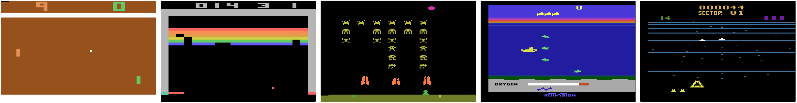

Deep Reinforcement Learning
Deep Q Learning
Prof. Dr. Sebastian Peitz
Chair of Safe Autonomous Systems, TU Dortmund
Summer term 2026
Content
a
Where are we?
| Chapter | Topic | Content |
|---|---|---|
| Basics & tabular methods | ||
| 1 | Multi-armed bandits | Exploration-exploitation dilemma |
| 2 | Markov decision processes | Dynamics, rewards, policies |
| 3 | Dynamic programming | Optimal decision making with full knowledge |
| 4 | Monte Carlo methods | Data-driven learning from entire episodes |
| 5 | Temporal difference learning & Q-learning | Data-driven learning from individual transitions |
| Deep-learning-based methods | ||
| 6 | Brief introduction to deep learning | The basics for what comes next |
| 7 | Deep Q-learning | |
| 8 | Policy gradients | |
| 9 | Actor-critic algorithms | |
| 10 | Advanced algorithms | |
| Model-Based Control | ||
| Advanced Topics |
Function Approximation
Motivation
- previously we were assuming that we can model everything by table loop-ups
Problems:
- real-world states can be continuous
- often we cannot see all possible states
Solution: Approximate value function, e.g. by
- linear combination of features
- decision trees
- neural networks -> DeepRL !
Value Function Approximation
- Represent state/state-action value function with a parametrized function
Linear Value Function Approximation
Weighted linear combination of features: \[ \hat V^\pi(s;\boldsymbol{\theta}) = \boldsymbol{\phi}(s)^\top \boldsymbol{\theta}\]
Optimization of objective (MSE): \[ J(\boldsymbol{\theta}) = \mathbb{E} \left[ \left(V^\pi(s) - \hat V^\pi(s;\boldsymbol{\theta}) \right)^2 \right] \]
Gradient descent: \[ \Delta (\boldsymbol{\theta}) = - \frac{1}{2} \alpha \nabla_\boldsymbol{\theta} J(\boldsymbol{\theta}) \]
Update rule: \[ \begin{align*} \Delta \boldsymbol{\theta} = -\alpha \left(V^\pi(s) - \boldsymbol{\phi}(s)^\top \boldsymbol{\theta}\right) \boldsymbol{\phi}(s) \end{align*}\]
Monte Carlo Value Function Approximation
Monte Carlo VFA
- \(G_t\) is a noisy but unbiased estimate of the true expected return \(V^\pi(s_t)\)
Update rule: \[ \begin{align*} \Delta \boldsymbol{\theta} = -\alpha \left(G_t - \boldsymbol{\phi}(s)^\top \boldsymbol{\theta}\right) \boldsymbol{\phi}(s) \end{align*}\]
Monte Carlo VFA: Convergence
[Based on Marius Lindauer’s lecture]
Based on Tsitsiklis and Van Roy. 1997.
Define the mean squared error of a linear value function approximation for a particular policy \(\pi\) relative to the true value as \[\text{MSVE}(\boldsymbol{\theta}) = \sum_{s \in S} d(s) (V^\pi (s) - \hat{V}^\pi(s;\boldsymbol{\theta}))^2 \] where
- \(d(s)\): stationary distribution of \(\pi\) in the true decision process
- \(\hat{V}^\pi(s;\boldsymbol{\theta}) = \boldsymbol{\phi}(s)^T\boldsymbol{\theta}\), a linear value function approximation
Monte Carlo policy evaluation with VFA converges to the weights \(\boldsymbol{\theta}_{MC}\) which has the minimum mean squared error possible: \[\text{MSVE}(\boldsymbol{\theta}_{MC}) = \min_{\boldsymbol{\theta}}\sum_{s \in S} d(s) (V^\pi (s) - \hat{V}^\pi(s;\boldsymbol{\theta}))^2 \]
Temporal Difference Learning with Value Function Approximation
TD-Learning with VFA
Compute target using bootstrapping: \[r_t + \gamma \hat V^\pi(s_{t+1};\boldsymbol{\theta}) \] Since target is not updated, \(\hat V^\pi(s_{t+1};\boldsymbol{\theta})\) is treated as a constant in the derivative.
Update rule: \[ \begin{align*} \Delta \boldsymbol{\theta} = -\alpha \left(r_t + \gamma \hat V^\pi(s_{t+1};\boldsymbol{\theta}) - \boldsymbol{\phi}(s)^\top \boldsymbol{\theta}\right) \boldsymbol{\phi}(s) \end{align*}\]
TD-Learning VFA: Convergence
[Based on Marius Lindauer’s lecture]
TD(0) policy evaluation with VFA converges to weights \(\boldsymbol{\theta}_{TD}\) which is a constant factor of the minimum mean squared error possible: \[\text{MSVE}(\boldsymbol{\theta}_{TD}) \leq \frac{1}{1-\gamma} \min_\boldsymbol{\theta}\sum_{s\in S} d(s) (V^\pi(s) - \hat{V}(s;\boldsymbol{\theta}))^2\]
SARSA and Q-Learning with VFA
[Based on Marius Lindauer’s lecture]
Similar to V(s), we can approximate Q(s,a): \[ \hat Q(s,a;\boldsymbol{\theta}) = \boldsymbol{\phi}(s,a)^\top \boldsymbol{\theta}\]
Monte Carlo Update: \[ \begin{align*} \Delta \boldsymbol{\theta} = -\alpha \left(\textcolor{green}{G_t} - \hat Q(s,a;\boldsymbol{\theta})\right) \nabla_\boldsymbol{\theta} \hat Q(s,a;\boldsymbol{\theta}) \end{align*}\]
SARSA with TD target: \[ \begin{align*} \Delta \boldsymbol{\theta} = -\alpha \left(\textcolor{green}{r_t + \gamma \hat Q(s_{t+1},a_{t+1};\boldsymbol{\theta})} - \hat Q(s,a;\boldsymbol{\theta})\right) \nabla_\boldsymbol{\theta} \hat Q(s,a;\boldsymbol{\theta}) \end{align*}\]
Q-Learning with TD target: \[ \begin{align*} \Delta \boldsymbol{\theta} = -\alpha \left(\textcolor{green}{r_t + \gamma \max_a \hat Q(s_{t+1},a;\boldsymbol{\theta})} - \hat Q(s,a;\boldsymbol{\theta})\right) \nabla_\boldsymbol{\theta} \hat Q(s,a;\boldsymbol{\theta}) \end{align*}\]
Deep Q-Learning
Towards more complex learning tasks
CartPole: 
Atari: 
-> Deep Neural Networks (DNNs) as value function approximators
Recall: Online Q-Learning with VFA
- Take action \(a_t\) and observe \((s_t, a_t, r_t, s_{t_1})\) -> correlated! breaks i.i.d assumption of NNs
- Update Q-Network: \[ \begin{align*} \Delta \boldsymbol{\theta} = -\alpha \left(r_t + \gamma \max_a \hat Q(s_{t+1},a;\boldsymbol{\theta}) - \textcolor{red}{\underbrace{\hat Q(s,a;\boldsymbol{\theta})}_{\text{non-stationary!}}}\right) \nabla_\boldsymbol{\theta} \hat Q(s,a;\boldsymbol{\theta}) \end{align*}\]
Deep Q-Network (DQN)
- Correlation -> Replay Buffer from which we sample batches i.i.d.
- Target network: Copy of previous network weights used as target and updated delayed: \(\boldsymbol{\theta}^-\)
Maximization Bias
- maximum in both value estimation and action selection
- leads to positive bias in Q-values
Double DQN
- keep two q networks and toss coin which one to update
Prioritized Experience Replay
Based on Marius Lindauer’s Lecture
- Let \(i\) be the index of the \(i\)-th tuple of experience \((s_i,a_i,r_i,s_{i+1})\)
- Sample tuples for the update using priority function
- Priority of a tuple \(i\) is proportional to DQN error \[ p_i = | r_i + \gamma \max_{a' \in \Ac} Q(s_{i+1}, a'; \boldsymbol{\theta}^-) - Q(s_i,a_i;\boldsymbol{\theta}) |\]
- Update \(p_i\) every update. \(p_i\) for new tuples is set to the maximum value
- One method: proportional (stochastic prioritization) \[ P(i) = \frac{p_i^\beta}{\sum_k p_k^\beta}\]
- \(\beta = 0\) yields random selections
https://arxiv.org/pdf/1511.05952
References